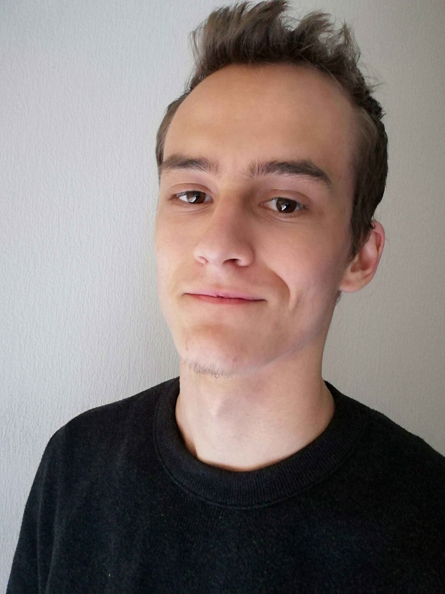

Anton Grekov
grekov.anton96@gmail.com
+41 079 555 96 58
Ch. De Planta 63
1223 Cologny
Langues
- Français: écrit et parlé
- Anglais : écrit, parlé, technique
- Russe : langue maternelle
Compétences techniques
Langages programmation
- HTML5
- CSS3
- Javascript
- PHP7-PDO
- SQL
Frameworks
- Bootstrap
- Laravel
- AngularJS
CMS
Systèmes
Autre
- Serveur Apache2
- MariaDB
- PhpMyAdmin
Web Développeur
Fullstack
Formations
Formation Web développeur
Octobre 2019 – Mars 2020 @ Réalise, Genève
Formation intensive théorique et pratique du Web développement. Installation d’un serveur Apache2 sous Linux et d’une base de données MariaDB.
- Projet de création d’une présentation personnelle web
- Compétences HTML5, CSS3
- Lien vers GitHub projet
- Projet de création d’un jeu de morpion en ligne
- Projet de réalisation d’un mini-facebook
- Compétences Php 7, PDO, base de données MariaDB
- Validation des compétences : autonomie, recherche et veille technologique, travail en équipe, environnement de développement Visual studio, Linux, gestion de projet Agile.
Ecole de commerce
2013 - 2017 @ Nicolas-Bouvier, Genève
- Etude de langues
- Connaissance du monde de l'entreprise
- Travail en équipe
Experiences Professionnelles
Stage web développeur
Janvier 2019 – Juin 2019 @ Geneva Business News, Genève
- Divers Projets sur Javascript
- Pratique d'anglais
Stage administration
Octobre 2017 – Octobre 2018 @ Office de poursuites, Genève
- Mise à jour de base de donées des tiers
Stage informatique
Septembre 2016 – Juin 2017 @ Espace entreprise, Genève
- Création et réalisation d'un site sur Wordpress
- Optimisation SEO
Loisirs
Jeux video
- Concentration, multitâche, réalisation des objéctifs
- Gestion du stress
- Auto-amélioration, coaching, organisation d'équipe
VTT